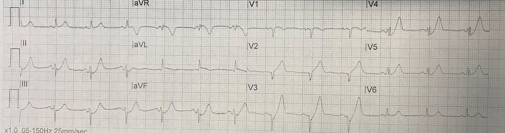
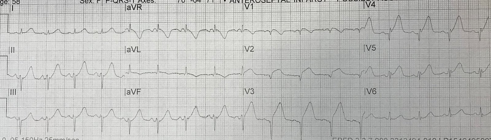
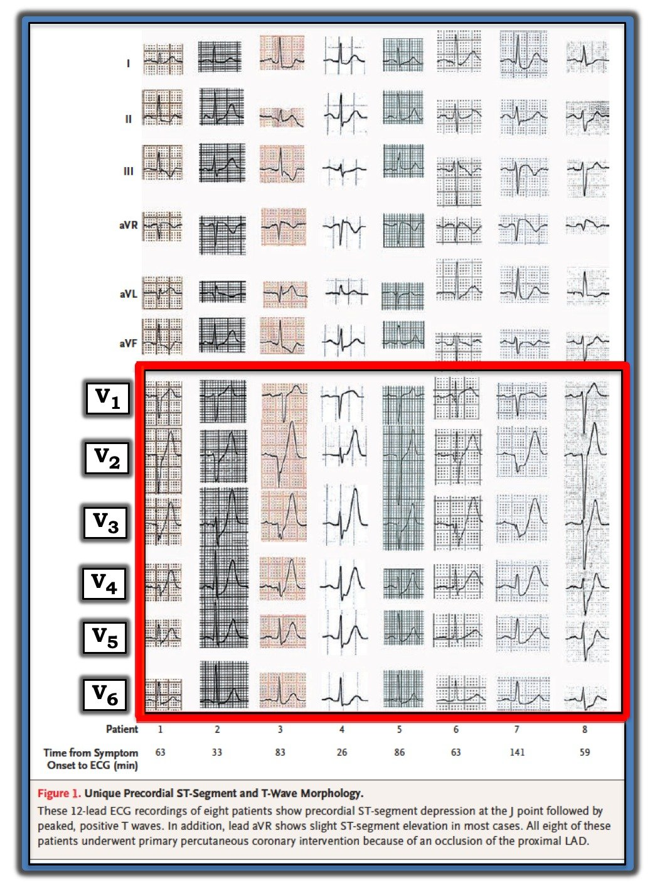
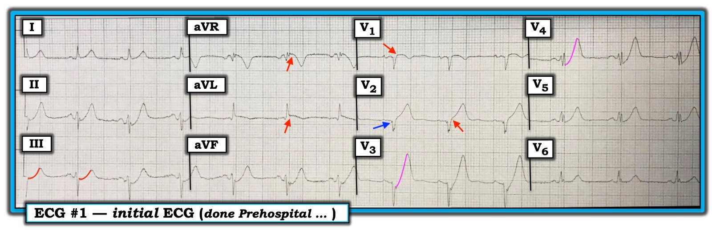

02/05/2019 — Bác sĩ ơi, chúng tôi có nên kích hoạt “báo động STEMI” của bệnh viện không?
Bản dịch tiếng Việt của bài "Doctor, should we activate the hospital’s “STEMI alert”?" – Dr. Smith’s ECG Blog. Giữ nguyên toàn bộ 6 hình ảnh của bản gốc.
Tác giả: Pendell Meyers
Tôi nhận được điện tâm đồ trước viện này (chúng tôi nhận điện tâm đồ trước viện qua hệ thống truyền từ xa (telemetry) từ đội cấp cứu ngoài viện (EMS) trên một khu vực rộng quanh bệnh viện của mình) và được cho biết có một bệnh nhân nữ 50 mấy tuổi bị đau ngực đang được chuyển đến một bệnh viện khác (bệnh viện này tình cờ lại là một trung tâm thông tim). Họ muốn biết liệu tôi có muốn họ kích hoạt “báo động STEMI” (“STEMI alert”) của bệnh viện kia hay không.
Đây là điện tâm đồ:


Có nhịp xoang với ST chênh lên (STE) có lẽ 1mm ở aVL, và cả ở V2 kèm sóng T tối cấp. Có ST chênh xuống (STD) ở V3-V5, cũng như ở II, III và aVF, đồng thời cũng có sóng T tối cấp ở tất cả các chuyển đạo này, tức là hình ảnh de Winter ở các chuyển đạo trước và dưới. Hình ảnh này về cơ bản là đặc hiệu chẩn đoán (pathognomonic) cho nhồi máu cơ tim do tắc (OMI) thành trước và mỏm (hình ảnh de Winter nhiều khả năng phản ánh tình trạng hẹp do huyết khối ~99% chỉ còn một dòng chảy nhỏ giọt, nhưng về tổng thể thì về cơ bản vẫn là cùng một biến cố, và khả năng tiến triển thành tắc hoàn toàn là cực kỳ cao). Vì vậy OMI đang xảy ra ở LAD, và LAD nhiều khả năng là loại III “vòng qua mỏm” (wraparound), cấp máu cho thành mỏm và phần xa của thành dưới ngoài thành trước.
Ngoài lề: Ca này chứng minh rằng sóng de Winter không chỉ giới hạn ở các chuyển đạo trước, mà có thể thấy ở bất kỳ vị trí nào. Điều này tương tự như sóng Wellens, vốn được mô tả đầu tiên ở vùng chi phối của LAD, nhưng cũng có thể xuất hiện ở các chuyển đạo dưới và/hoặc bên.
Nhưng tất nhiên, theo định nghĩa thì đây không phải là STEMI vì nó không đạt tiêu chuẩn STEMI. Các hướng dẫn về STEMI có nêu rằng sóng T tối cấp “có thể chỉ điểm nhồi máu cơ tim cấp giai đoạn sớm” nhưng không bàn đến nó như một “tương đương STEMI”.
Dù sao tôi vẫn bảo họ kích hoạt “báo động STEMI” của bệnh viện đó, vì bệnh nhân này cần tái tưới máu cấp cứu và tôi sẽ không thể bênh vực cho bệnh nhân ở một bệnh viện khác. Dù có ghi nhận “STEMI” hay không, bệnh nhân vẫn có nguy cơ rất cao bị ngừng tim do rung thất (VF) hoặc mất bù, hoặc ít nhất cũng là một ổ nhồi máu cơ tim xuyên thành rộng ở thành trước nếu không ai nhận ra OMI của bệnh nhân. Tôi cũng bảo họ ghi thêm một điện tâm đồ 12 chuyển đạo nữa trước khi đến khoa cấp cứu (ED).
Họ ghi điện tâm đồ này ngay trước khi vào khoa cấp cứu:


Bệnh nhân bị tắc hoàn toàn 100% do huyết khối ở LAD đoạn gần. Tôi không thể xác nhận LAD có đúng là loại III (vòng qua mỏm) hay không, tuy nhiên điện tâm đồ hàm ý rằng về mặt chức năng nó tương đương như vậy.
Những điểm cần học:
Trong thời đại mà chúng ta phải chịu đựng một mô hình nhồi máu cơ tim chưa tối ưu, đôi khi chúng ta phải phá vỡ các “quy tắc” để mang lại lợi ích cho bệnh nhân. Một số bệnh nhân nhồi máu cơ tim không ST chênh lên (NSTEMI) như bệnh nhân này được hưởng lợi rất lớn từ chụp mạch vành cấp cứu, vậy mà theo mô hình hiện hành họ lại bị từ chối lợi ích đó cho đến khi điện tâm đồ về sau biểu hiện STEMI (nếu điều đó có xảy ra!).
Các điện tâm đồ liên tiếp cực kỳ hữu ích.

===================================
Bình luận của KEN GRAUER, MD (4/5/2019):
===================================
Năm 2008 — de Winter và cs. đã mô tả “Một dấu hiệu điện tâm đồ mới của tắc LAD đoạn gần” (A New ECG Sign of Proximal LAD Occlusion) (NEJM 359:2071-73, 2008), dấu hiệu mà họ thấy có ở ~2% trong số 1.532 bệnh nhân nhập viện vì nhồi máu cơ tim cấp thành trước. Tôi đã trích Hình 1 từ bản thảo gốc của họ — trong đó de Winter và cs. minh họa các thay đổi điện tâm đồ ở 8 bệnh nhân của họ. Mô tả gốc của de Winter và cs. về hình ảnh điện tâm đồ này như sau:
- “Thay vì ST chênh lên đặc trưng — đoạn ST cho thấy ST chênh xuống dốc lên 1-3 mm tại điểm J ở các chuyển đạo V1 đến V6, nối tiếp vào sóng T cao, dương, đối xứng”.
Các đặc điểm khác mà de Winter và cs. thấy đi kèm với hình ảnh này bao gồm:
- Thường có ST chênh lên 1-2 mm ở chuyển đạo aVR.
- Thời gian QRS bình thường (hoặc QRS chỉ giãn rộng tối thiểu).
- Mất tăng tiến sóng R ở một số bệnh nhân.
- Điều đáng chú ý — hình ảnh de Winter này được ghi nhận trung bình 1,5 giờ sau khởi phát triệu chứng — và LAD “vòng qua mỏm” được phát hiện khi thông tim ở 50% bệnh nhân.
- Nhiều bệnh nhân trong số này không có diễn tiến điện tâm đồ từ hình ảnh sóng T de Winter sang ST chênh lên rõ rệt — mà thay vào đó vẫn duy trì sóng T de Winter như một hình ảnh “tĩnh” cho đến khi được thông tim.


=================
KINH NGHIỆM CỦA TÔI: Từ khi tôi bắt đầu tích cực tham gia các blog điện tâm đồ trên internet năm 2010 — tôi đã thấy rất nhiều ca được đăng trên mạng về những bệnh nhân đau ngực mới khởi phát, trong đó có sóng T tối cấp ở các chuyển đạo trước nhưng chưa hề đáp ứng tiêu chuẩn nhồi máu cơ tim ST chênh lên. Những ấn tượng mang tính giai thoại của tôi về hình ảnh này như sau:
- ĐIỂM THEN CHỐT (PEARL): Có nhiều biến thể của “chủ đề” về sóng T de Winter. Nhiều ca tôi thấy được đăng mà về sau tiến triển thành STEMI thành trước lại không có điểm J chênh xuống như De Winter và cs. mô tả (hoặc nhiều nhất chỉ có điểm J chênh xuống tối thiểu ở 1-2 chuyển đạo). Mức độ nhọn của sóng T không phải lúc nào cũng nổi bật như vậy — và hình ảnh thường không “tĩnh”, mà diễn tiến (như đã xảy ra trong ca này) thành ST chênh lên rõ rệt trên các bản ghi liên tiếp.
- Ý KIẾN CỦA TÔI: Với nhiều bệnh nhân không biểu hiện “hình ảnh tĩnh” mà de Winter và cs. mô tả — Những gì bạn thấy trên điện tâm đồ tùy thuộc vào việc thời điểm ghi điện tâm đồ rơi vào lúc nào trong quá trình bệnh … Và hình ảnh có thể tiến triển!
Điện tâm đồ trong ca này: Ghi nhớ mô tả gốc của de Winter và cs. — điện tâm đồ thứ 1 trong ca này biểu hiện một loạt dấu hiệu chẩn đoán quan trọng (Hình 2):


=================
- Như Dr. Meyers đã nêu — sóng T de Winter điển hình có xuất hiện ở một số chuyển đạo ngực. Các dấu hiệu này rõ nhất ở các chuyển đạo V3 và V4. Lưu ý điểm J chênh xuống ở các chuyển đạo V3, V4 và V5 — dẫn lên một sóng T khổng lồ ở V3, và một sóng T nhỏ hơn một chút ở V4.
- Điểm J không chênh xuống ở chuyển đạo V2. Thay vào đó, đã có ST chênh lên nhẹ ở chuyển đạo V2 (mũi tên ĐỎ ở chuyển đạo này).
- Cũng có một chút ST chênh lên ở chuyển đạo V1 (mũi tên ĐỎ ở chuyển đạo này).
- Không chỉ có sóng T de Winter ở các chuyển đạo dưới — tôi tin rằng còn có ST chênh xuống kéo dài lâu hơn so với điểm J chênh xuống thoáng qua mà ta thấy ở các chuyển đạo ngực V3 và V4 (hãy so sánh độ dốc của các đoạn ST màu ĐỎ — với các đoạn ST màu HỒNG dốc lên nhanh hơn, vượt lên trên đường nền sớm hơn nhiều). Tôi diễn giải sự khác biệt về độ dốc lên này là gợi ý cả sóng T de Winter ở các chuyển đạo dưới — và cả ST chênh xuống soi gương ở các chuyển đạo dưới.
- Cùng với ST chênh lên tinh tế-nhưng-có-thật ở chuyển đạo aVL (mũi tên ĐỎ ở aVL) — dấu hiệu ST chênh xuống soi gương ở các chuyển đạo dưới dự báo vị trí gần hơn của chỗ tắc LAD.
- Việc thấy sóng T de Winter ở cả các chuyển đạo dưới và các chuyển đạo trước phù hợp với khả năng giải phẫu LAD “vòng qua mỏm” (wraparound).
Các dấu hiệu khác ở Hình 2 bao gồm:
- ST chênh lên nhẹ ở chuyển đạo aVR (như de Winter và cs. đã ghi nhận).
- Mất tăng tiến sóng R (như de Winter và cs. đã ghi nhận) — với giá trị dự báo nhồi máu đang diễn ra cấp tính được tăng cường bởi: i) khía tinh tế ở phần khởi đầu QRS ở chuyển đạo V2 (mũi tên XANH); và, ii) phân mảnh rõ rệt của QRS ở các chuyển đạo V4 và V5 (và ở mức độ ít hơn ở V3 và V6).
- Cuối cùng — có một rối loạn dẫn truyền cấp = LAHB (QRS âm là chủ yếu ở mỗi chuyển đạo dưới).
KẾT LUẬN: Ở bệnh nhân đau ngực mới khởi phát này — chỉ riêng các dấu hiệu trên bản ghi trước viện ban đầu (Hình 2) cũng đã phải là chỉ định quá-đủ cho thông tim cấp cứu. Điện tâm đồ thứ 2 ghi trong ca này đã xác nhận nhu cầu thông tim ngay lập tức — nhưng lẽ ra không cần đến nó … Chúng tôi xin CẢM ƠN Dr. Meyers đã giới thiệu ca này!